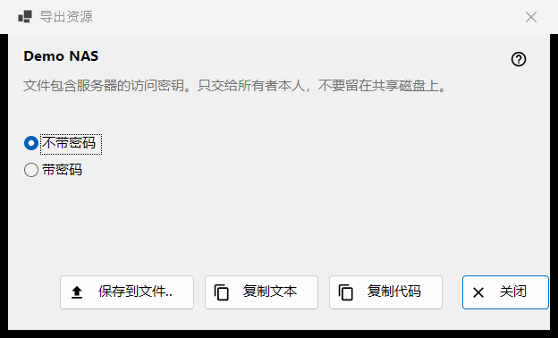
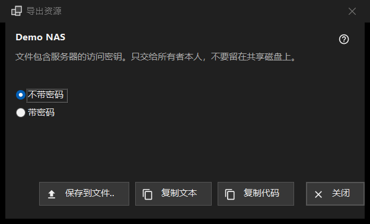

导出资源
用途说明
准备一台 SFTP 服务器的设置，以便另一台电脑或手机导入。它从资源列表「更多」菜单中的「导出..」打开，并需要先选中一个资源；Share Manager 共享的文件夹则要在 Share Manager 中导出。


操作顺序
- 阅读资源名称下方的警告。
- 选择「不带密码」（默认）或「带密码」。
- 点击「保存到文件..」，或把设置复制为文本或短代码。
- 只把结果交给其所有者。
界面元素
警告
名称下方的那一行说明，该文件携带了访问服务器的密钥：只能交给其所有者，切勿留在共享磁盘上。它同样适用于文件、复制的文本和代码。
不带或带密码
「不带密码」一开始就是选中的。只有在已保存的密码可以读回时，「带密码」才可用；否则会显示提示「密码未保存 - 文件将不含密码。」密码仅在内存中为导出而解密，不会去往其他任何地方。
保存、复制文本、复制代码
「保存到文件..」通过保存对话框写入一个 .fmscfg 文件；写入程序会拒绝 FAT 或 exFAT 磁盘、网络磁盘以及其他用户可以更改的文件夹，并且绝不会留下写了一半的文件。「复制文本」把设置文档放到剪贴板，「复制代码」则放入内容相同的短代码。两者复制时都带有隐私标记（不进入剪贴板历史，不进行云同步）。状态栏显示结果。
可导出的内容
只有查看器已经记住其密钥的 SFTP 服务器才能导出。窗口无论如何都会打开，点击按钮时，拒绝原因会显示在状态栏：网络文件夹 (SMB) 无法用该文件描述；没有记住服务器密钥（请打开一次该资源并确认密钥）；资源没有可交出的地址；文件夹的写法不被该文件接受（请通过「编辑..」修正）。